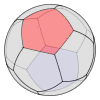

|  |
Spherical Easel
A spherical drawing program |
To download Spherical Easel, you must have Java Web Start installed on your machine. Installation is a simple step on most operating systems. Please see the notes at the bottom of this page for installation instructions and information.
Please note: While Spherical Easel is being
installed on your machine, you will see a security warning, most
likely stating that the download's digital signature cannot be
verified.
You will need to ignore this warning, and it is safe to do so.
Download Spherical Easel |
Notes on Java Web Start
Java Web Start, a tool for downloading and managing software, is freely available from Sun. Its installation and use are quite straightforward.
You will first need to download Java Web Start from Sun. This involves downloading a version of the Java Runtime Environment (JRE) and installing it. In fact, you have already done this if you have installed the Java Plug-In.
Microsoft Windows users: Java Web Start is installed automatically when you install the Java Runtime Environment (JRE). In particular, if you have installed the Java Plug-In for web browsers, you have already installed Java Web Start. Most likely, there is a Java Web Start icon on your desktop and an entry in your Start Menu.
Linux users: If you have installed the Java Runtime Environment (JRE), you should look for a file like this one:
/usr/java/j2sdk1.4.2_02/jre/javaws-1_2_0_02-linux-i586-i.zip
Copy this file into an installation directory, unzip it and run the script install.sh. Java Web Start is now an application called javaws in a directory javaws.
The installation of Spherical Easel is started through the link above. Java Web Start should handle the installation and launch Spherical Easel. Again, you should ignore the warning that installing Spherical Easel is unsafe. To make this warning go away requires a digital certificate, which is beyond the means of our shoe-string operation.
When you wish to open Spherical Easel in the future, you may do so by opening Java Web Start and selecting the Spherical Easel icon. Windows users may start Web Start from the desktop or Start Menu while Linux users will need to start it from the command line. Upon opening Spherical Easel for the second time, Windows users will be asked whether to include a shortcut to Spherical Easel on the desktop.
© 2002-2009 David Austin and William Dickinson